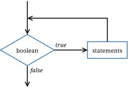

6 Loops and Strings
Computers are often used to automate repetitive tasks, such as searching for text in documents. Repeating tasks without making errors is something that computers do well and people do poorly.
In this chapter, you’ll learn how to use while and for loops to add repetition to your code. We’ll also take a first look at String methods and solve some interesting problems.
6.1 The while Statement
Using a while statement, we can repeat the same code multiple times:
int n = 3;
while (n > 0) {
System.out.println(n);
n = n - 1;
}
System.out.println("Blastoff!");Reading the code in English sounds like this: “Start with n set to 3. While n is greater than 0, print the value of n, and reduce the value of n by 1. When you get to 0, print Blastoff!”
The output is shown here:
3
2
1
Blastoff!The flow of execution for a while statement is as follows:
Evaluate the condition in parentheses, yielding
trueorfalse.If the condition is
false, skip the following statements in braces.If the condition is
true, execute the statements and go back to step 1.
This type of flow is called a loop, because the last step “loops back around” to the first. Figure 6.1 shows this idea using a flowchart.

while loop.
The body of the loop should change the value of one or more variables so that, eventually, the condition becomes false and the loop terminates. Otherwise, the loop will repeat forever, which is called an infinite loop:
int n = 3;
while (n > 0) {
System.out.println(n);
// n never changes
}This example will print the number 3 forever, or at least until you terminate the program. An endless source of amusement for computer scientists is the observation that the directions on shampoo, “Lather, rinse, repeat,” are an infinite loop.
In the first example, we can prove that the loop terminates when n is positive. But in general, it is not so easy to tell whether a loop terminates. For example, this loop continues until n is 1 (which makes the condition false):
while (n != 1) {
System.out.println(n);
if (n % 2 == 0) { // n is even
n = n / 2;
} else { // n is odd
n = 3 * n + 1;
}
}Each time through the loop, the program displays the value of n and then checks whether it is even or odd. If it is even, the value of n is divided by 2. If it is odd, the value is replaced by \(3n+1\). For example, if the starting value is 3, the resulting sequence is 3, 10, 5, 16, 8, 4, 2, 1.
Since n sometimes increases and sometimes decreases, there is no obvious proof that n will ever reach 1 and that the program will ever terminate. For some values of n, such as the powers of two, we can prove that it terminates. The previous example ends with such a sequence, starting when n is 16 (or \(2^4\)).
The hard question is whether this program terminates for all values of n. So far, no one has been able to prove it or disprove it! For more information, see https://en.wikipedia.org/wiki/Collatz_conjecture.
6.2 Increment and Decrement
Here is another while loop example; this one displays the numbers 1 to 5:
int i = 1;
while (i <= 5) {
System.out.println(i);
i++; // add 1 to i
}Assignments like i = i + 1 don’t often appear in loops, because Java provides a more concise way to add and subtract by one. Specifically, ++ is the increment operator; it has the same effect as i = i + 1. And -- is the decrement operator; it has the same effect as i = i - 1.
If you want to increment or decrement a variable by an amount other than 1, you can use += and -=. For example, i += 2 increments i by 2:
int i = 2;
while (i <= 8) {
System.out.print(i + ", ");
i += 2; // add 2 to i
}
System.out.println("Who do we appreciate?");And the output is as follows:
2, 4, 6, 8, Who do we appreciate?6.3 The for Statement
The loops we have written so far have three parts in common. They start by initializing a variable, they have a condition that depends on that variable, and they do something inside the loop to update that variable.
Running the same code multiple times is called iteration. It’s so common that there is another statement, the for loop, that expresses it more concisely. For example, we can rewrite the 2-4-6-8 loop this way:
for (int i = 2; i <= 8; i += 2) {
System.out.print(i + ", ");
}
System.out.println("Who do we appreciate?");for loops have three components in parentheses, separated by semicolons: the initializer, the condition, and the update:
The initializer runs once at the very beginning of the loop. It is equivalent to the line before the
whilestatement.The condition is checked each time through the loop. If it is
false, the loop ends. Otherwise, the body of the loop is executed (again).At the end of each iteration, the update runs, and we go back to step 2.
The for loop is often easier to read because it puts all the loop-related statements at the top of the loop. Doing so allows you to focus on the statements inside the loop body. Figure 6.2 illustrates for loops with a flowchart.
for loop.
There is another difference between for loops and while loops: if you declare a variable in the initializer, it exists only inside the for loop. For example:
for (int n = 3; n > 0; n--) {
System.out.println(n);
}
System.out.println("n is now " + n); // compiler errorThe last line tries to display n (for no reason other than demonstration), but it won’t work. If you need to use a loop variable outside the loop, you have to declare it outside the loop, like this:
int n;
for (n = 3; n > 0; n--) {
System.out.println(n);
}
System.out.println("n is now " + n);Notice that the for statement does not say int n = 3. Rather, it simply initializes the existing variable n.
6.4 Nested Loops
Like conditional statements, loops can be nested one inside the other. Nested loops allow you to iterate over two variables. For example, we can generate a “multiplication table” like this:
for (int x = 1; x <= 10; x++) {
for (int y = 1; y <= 10; y++) {
System.out.printf("%4d", x * y);
}
System.out.println();
}Variables like x and y are called loop variables, because they control the execution of a loop. In this example, the first loop (for x) is known as the “outer loop”, and the second loop (for y) is known as the “inner loop”.
Each loop repeats its corresponding statements 10 times. The outer loop iterates from 1 to 10 only once, but the inner loop iterates from 1 to 10 each of those 10 times. As a result, the printf method is invoked 100 times.
The format specifier \%4d displays the value of x * y padded with spaces so it’s four characters wide. Doing so causes the output to align vertically, regardless of how many digits the numbers have:
1 2 3 4 5 6 7 8 9 10
2 4 6 8 10 12 14 16 18 20
3 6 9 12 15 18 21 24 27 30
4 8 12 16 20 24 28 32 36 40
5 10 15 20 25 30 35 40 45 50
6 12 18 24 30 36 42 48 54 60
7 14 21 28 35 42 49 56 63 70
8 16 24 32 40 48 56 64 72 80
9 18 27 36 45 54 63 72 81 90
10 20 30 40 50 60 70 80 90 100It’s important to realize that the output is displayed row by row. The inner loop displays a single row of output, followed by a newline. The outer loop iterates over the rows themselves. Another way to read nested loops, like the ones in this example, is: “For each row x, and for each column y, …”
6.5 Characters
Some of the most interesting problems in computer science involve searching and manipulating text. In the next few sections, we’ll discuss how to apply loops to strings. Although the examples are short, the techniques work the same whether you have one word or one million words.
Strings provide a method named charAt. It returns a char, a data type that stores an individual character (as opposed to strings of them):
String fruit = "banana";
char letter = fruit.charAt(0);The argument 0 means that we want the character at index 0. String indexes range from 0 to \(n-1\), where \(n\) is the length of the string. So the character assigned to letter is 'b':
| b | a | n | a | n | a |
|---|---|---|---|---|---|
| 0 | 1 | 2 | 3 | 4 | 5 |
Characters work like the other data types you have seen. You can compare them using relational operators:
if (letter == 'A') {
System.out.println("It's an A!");
}Character literals, like 'A', appear in single quotes. Unlike string literals, which appear in double quotes, character literals can contain only a single character. Escape sequences, like '\\t', are legal because they represent a single character.
The increment and decrement operators also work with characters. So this loop displays the letters of the alphabet:
System.out.print("Roman alphabet: ");
for (char c = 'A'; c <= 'Z'; c++) {
System.out.print(c);
}
System.out.println();The output is shown here:
ABCDEFGHIJKLMNOPQRSTUVWXYZJava uses Unicode to represent characters, so strings can store text in other alphabets like Cyrillic and Greek, and non-alphabetic languages like Chinese. You can read more about it at the Unicode website (https://unicode.org/).
In Unicode, each character is represented by a “code point”, which you can think of as an integer. The code points for uppercase Greek letters run from 913 to 937, so we can display the Greek alphabet like this:
System.out.print("Greek alphabet: ");
for (int i = 913; i <= 937; i++) {
System.out.print((char) i);
}
System.out.println();This example uses a type cast to convert each integer (in the range) to the corresponding character. Try running the code and see what happens.
6.6 Which Loop to Use
for and while loops have the same capabilities; any for loop can be rewritten as a while loop, and vice versa. For example, we could have printed letters of the alphabet by using a while loop:
System.out.print("Roman alphabet: ");
char c = 'A';
while (c <= 'Z') {
System.out.print(c);
c++;
}
System.out.println();You might wonder when to use one or the other. It depends on whether you know how many times the loop will repeat.
A for loop is “definite”, which means we know, at the beginning of the loop, how many times it will repeat. In the alphabet example, we know it will run 26 times. In that case, it’s better to use a for loop, which puts all of the loop control code on one line.
A while loop is “indefinite”, which means we don’t know how many times it will repeat. For example, when validating user input as in Section 5.9, it’s impossible to know how many times the user will enter a wrong value. In this case, a while loop is more appropriate:
System.out.print("Enter a number: ");
while (!in.hasNextDouble()) {
String word = in.next();
System.err.println(word + " is not a number");
System.out.print("Enter a number: ");
}
double number = in.nextDouble();It’s easier to read the Scanner method calls when they’re not all on one line of code.
6.7 String Iteration
Strings provide a method called length that returns the number of characters in the string. The following loop iterates the characters in fruit and displays them, one on each line:
for (int i = 0; i < fruit.length(); i++) {
char letter = fruit.charAt(i);
System.out.println(letter);
}Because length is a method, you have to invoke it with parentheses (there are no arguments). When i is equal to the length of the string, the condition becomes false and the loop terminates.
To find the last letter of a string, you might be tempted to do something like the following:
int length = fruit.length();
char last = fruit.charAt(length); // wrong!This code compiles and runs, but invoking the charAt method throws a StringIndexOutOfBoundsException. The problem is that there is no sixth letter in "banana". Since we started counting at 0, the six letters are indexed from 0 to 5. To get the last character, you have to subtract 1 from length:
int length = fruit.length();
char last = fruit.charAt(length - 1); // correctMany string algorithms involve reading one string and building another. For example, to reverse a string, we can concatenate one character at a time:
public static String reverse(String s) {
String r = "";
for (int i = s.length() - 1; i >= 0; i--) {
r += s.charAt(i);
}
return r;
}The initial value of r is "", which is an empty string. The loop iterates the indexes of s in reverse order. Each time through the loop, the += operator appends the next character to r. When the loop exits, r contains the characters from s in reverse order. So the result of reverse("banana") is "ananab".
6.8 The indexOf Method
To search for a specific character in a string, you could write a for loop and use charAt as in the previous section. However, the String class already provides a method for doing just that:
String fruit = "banana";
int index = fruit.indexOf('a'); // returns 1This example finds the index of 'a' in the string. But the letter appears three times, so it’s not obvious what indexOf might do. According to the documentation, it returns the index of the first appearance.
To find subsequent appearances, you can use another version of indexOf, which takes a second argument that indicates where in the string to start looking:
int index = fruit.indexOf('a', 2); // returns 3To visualize how indexOf and other String methods work, it helps to draw a picture like Figure 6.3. The previous code starts at index 2 (the first 'n') and finds the next 'a', which is at index 3.
String of six characters.
If the character happens to appear at the starting index, the starting index is the answer. So fruit.indexOf('a', 5) returns 5. If the character does not appear in the string, indexOf returns -1. Since indexes cannot be negative, this value indicates the character was not found.
You can also use indexOf to search for an entire string, not just a single character. For example, the expression fruit.indexOf("nan") returns 2.
6.9 Substrings
In addition to searching strings, we often need to extract parts of strings. The substring method returns a new string that copies letters from an existing string, given a pair of indexes:
fruit.substring(0, 3)returns"ban"fruit.substring(2, 5)returns"nan"fruit.substring(6, 6)returns""
Notice that the character indicated by the second index is not included. Defining substring this way simplifies some common operations. For example, to select a substring with length len, starting at index i, you could write fruit.substring(i, i + len).
Like most string methods, substring is overloaded. That is, there are other versions of substring that have different parameters. If it’s invoked with one argument, it returns the letters from that index to the end:
fruit.substring(0)returns"banana"fruit.substring(2)returns"nana"fruit.substring(6)returns""
The first example returns a copy of the entire string. The second example returns all but the first two characters. As the last example shows, substring returns the empty string if the argument is the length of the string.
We could also use fruit.substring(2, fruit.length()) to get the result "nana". But calling substring with one argument is more convenient when you want the end of the string.
6.10 String Comparison
When comparing strings, it might be tempting to use the == and != operators. But that will almost never work. The following code compiles and runs, but it always displays Goodbye! regardless what the user types.
System.out.print("Play again? ");
String answer = in.nextLine();
if (answer == "yes") { // wrong!
System.out.println("Let's go!");
} else {
System.out.println("Goodbye!");
}The problem is that the == operator checks whether the two operands refer to the same object. Even if the answer is "yes", it will refer to a different object in memory than the literal string "yes" in the code. You’ll learn more about objects and references in the next chapter.
The correct way to compare strings is with the equals method, like this:
if (answer.equals("yes")) {
System.out.println("Let's go!");
}This example invokes equals on answer and passes "yes" as an argument. The equals method returns true if the strings contain the same characters; otherwise, it returns false.
If two strings differ, we can use compareTo to see which comes first in alphabetical order:
String name1 = "Alan Turing";
String name2 = "Ada Lovelace";
int diff = name1.compareTo(name2);
if (diff < 0) {
System.out.println("name1 comes before name2.");
} else if (diff > 0) {
System.out.println("name2 comes before name1.");
} else {
System.out.println("The names are the same.");
}The return value from compareTo is the difference between the first characters in the strings that are not the same. In the preceding code, compareTo returns positive 8, because the second letter of "Ada" comes before the second letter of "Alan" by eight letters.
If the first string (the one on which the method is invoked) comes earlier in the alphabet, the difference is negative. If it comes later in the alphabet, the difference is positive. If the strings are equal, their difference is zero.
Both equals and compareTo are case-sensitive. In Unicode, uppercase letters come before lowercase letters. So "Ada" comes before "ada".
6.11 String Formatting
In Section 3.5, we learned how to use System.out.printf to display formatted output. Sometimes programs need to create strings that are formatted a certain way, but not display them immediately (or ever). For example, the following method returns a time string in 12-hour format:
public static String timeString(int hour, int minute) {
String ampm;
if (hour < 12) {
ampm = "AM";
if (hour == 0) {
hour = 12; // midnight
}
} else {
ampm = "PM";
hour = hour - 12;
}
return String.format("%02d:%02d %s", hour, minute, ampm);
}String.format takes the same arguments as System.out.printf: a format specifier followed by a sequence of values. The main difference is that System.out.printf displays the result on the screen. String.format creates a new string but does not display anything.
In this example, the format specifier \%02d means “two-digit integer padded with zeros”, so timeString(19, 5) returns the string "07:05 PM". As an exercise, try writing two nested for loops (in main) that invoke timeString and display all possible times over a 24-hour period.
Be sure to skim through the documentation for String. Knowing what other methods are there will help you avoid reinventing the wheel. The easiest way to find documentation for Java classes is to do a web search for “Java” and the name of the class.
6.12 Vocabulary
- loop:
-
A statement that executes a sequence of statements repeatedly.
- loop body:
-
The statements inside the loop.
- infinite loop:
-
A loop whose condition is always true.
- increment:
-
Increase the value of a variable.
- decrement:
-
Decrease the value of a variable.
- iteration:
-
Executing a sequence of statements repeatedly.
- loop variable:
-
A variable that is initialized, tested, and updated in order to control a loop.
- index:
-
An integer variable or value used to indicate a character in a string.
- Unicode:
-
An international standard for representing characters in most of the world’s languages.
- empty string:
-
The string
"", which contains no characters and has a length of zero. - overloaded:
-
Two or more methods with the same name but different parameters.
6.13 Exercises
The code for this chapter is in the ch06 directory of ThinkJavaCode2. See page for instructions on how to download the repository. Before you start the exercises, we recommend that you compile and run the examples.
If you have not already read Appendix 18.6, now might be a good time. It describes the DrJava debugger, which is a useful tool for visualizing the flow of execution through loops.
Exercise 6.1. Consider the following methods (main and loop):
Draw a table that shows the value of the variables
iandnduring the execution ofloop. The table should contain one column for each variable and one line for each iteration.What is the output of this program?
Can you prove that this loop terminates for any positive value of
n?
public static void main(String[] args) {
loop(10);
}
public static void loop(int n) {
int i = n;
while (i > 1) {
System.out.println(i);
if (i % 2 == 0) {
i = i / 2;
} else {
i = i + 1;
}
}
}Exercise 6.2. Let’s say you are given a number, \(a\), and you want to find its square root. One way to do that is to start with a rough guess about the answer, \(x_0\), and then improve the guess by using this formula: \[x_1 =(x_0 + a/x_0) / 2\] For example, if we want to find the square root of 9, and we start with \(x_0 = 6\), then \(x_1 = (6 + 9/6) / 2 = 3.75\), which is closer. We can repeat the procedure, using \(x_1\) to calculate \(x_2\), and so on. In this case, \(x_2 = 3.075\) and \(x_3 = 3.00091\). So the repetition converges quickly on the correct answer.
Write a method called squareRoot that takes a double and returns an approximation of the square root of the parameter, using this technique. You should not use Math.sqrt.
As your initial guess, you should use \(a/2\). Your method should iterate until it gets two consecutive estimates that differ by less than 0.0001. You can use Math.abs to calculate the absolute value of the difference.
Exercise 6.3. One way to evaluate \(\exp(-x^2)\) is to use the infinite series expansion: \[\exp(-x^2) = 1 - x^2 + x^4/2 - x^6/6 + \ldots\] The \(i\)th term in this series is \((-1)^i x^{2i} / i!\). Write a method named gauss that takes x and n as arguments and returns the sum of the first n terms of the series. You should not use factorial or pow.
Exercise 6.4. A word is said to be “abecedarian” if the letters in the word appear in alphabetical order. For example, the following are all six-letter English abecedarian words:
abdest, acknow, acorsy, adempt, adipsy, agnosy, befist, behint, beknow, bijoux, biopsy, cestuy, chintz, deflux, dehors, dehort, deinos, diluvy, dimpsy
Write a method called isAbecedarian that takes a String and returns a boolean indicating whether the word is abecedarian.
Exercise 6.5.
A word is said to be a “doubloon” if every letter that appears in the word appears exactly twice. Here are some example doubloons found in the dictionary:
Abba, Anna, appall, appearer, appeases, arraigning, beriberi, bilabial, boob, Caucasus, coco, Dada, deed, Emmett, Hannah, horseshoer, intestines, Isis, mama, Mimi, murmur, noon, Otto, papa, peep, reappear, redder, sees, Shanghaiings, Toto
Write a method called isDoubloon that takes a string and checks whether it is a doubloon. To ignore case, invoke the toLowerCase method before checking.
Exercise 6.6. In Scrabble[^1] each player has a set of tiles with letters on them. The object of the game is to use those letters to spell words. The scoring system is complex, but longer words are usually worth more than shorter words.
Imagine you are given your set of tiles as a string, like "quijibo", and you are given another string to test, like "jib".
Write a method called canSpell that takes two strings and checks whether the set of tiles can spell the word. You might have more than one tile with the same letter, but you can use each tile only once.